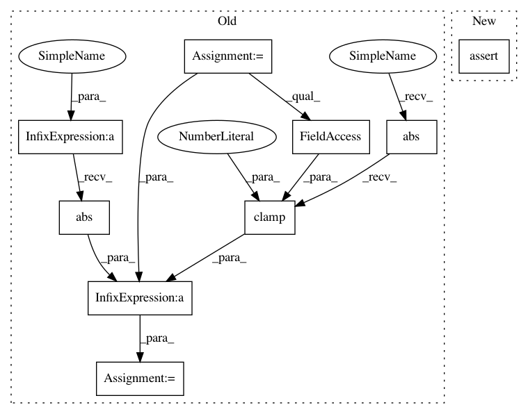

6bca4eed74e22ee369c166649f15db56f8565e35,test/lazy/_lazy_tensor_test_case.py,LazyTensorTestCase,test_inv_quad_logdet,#LazyTensorTestCase#,563
Before Change
[torch.logdet(flattened_evaluated[i]).unsqueeze(0) for i in range(lazy_tensor.batch_shape.numel())]
).view(lazy_tensor.batch_shape)
diff_invq = (res_inv_quad - actual_inv_quad).abs() / actual_inv_quad.abs().clamp(1, math.inf)
diff_logdet = (res_logdet - actual_logdet).abs() / actual_logdet.abs().clamp(1, math.inf)
self.assertLess(diff_invq.max().item(), 0.01)
self.assertLess(diff_logdet.max().item(), 0.3)
After Change
).view(lazy_tensor.batch_shape)
self.assertAllClose(res_inv_quad, actual_inv_quad, rtol=0.01, atol=0.01)
self.assertAllClose(res_logdet, actual_logdet, rtol=0.2, atol=0.03)
def test_inv_quad_logdet_no_reduce(self):
if not self.__class__.skip_slq_tests:
// Forward
In pattern: SUPERPATTERN
Frequency: 3
Non-data size: 9
Instances
Project Name: cornellius-gp/gpytorch
Commit Name: 6bca4eed74e22ee369c166649f15db56f8565e35
Time: 2019-03-23
Author: gpleiss@gmail.com
File Name: test/lazy/_lazy_tensor_test_case.py
Class Name: LazyTensorTestCase
Method Name: test_inv_quad_logdet
Project Name: cornellius-gp/gpytorch
Commit Name: 6bca4eed74e22ee369c166649f15db56f8565e35
Time: 2019-03-23
Author: gpleiss@gmail.com
File Name: test/lazy/_lazy_tensor_test_case.py
Class Name: LazyTensorTestCase
Method Name: test_inv_quad_logdet_no_reduce
Project Name: cornellius-gp/gpytorch
Commit Name: 6bca4eed74e22ee369c166649f15db56f8565e35
Time: 2019-03-23
Author: gpleiss@gmail.com
File Name: test/lazy/_lazy_tensor_test_case.py
Class Name: LazyTensorTestCase
Method Name: test_inv_quad_logdet
Project Name: cornellius-gp/gpytorch
Commit Name: 0515a106cd2cb57ac8111fe9d7fa4fe977be54f6
Time: 2019-03-18
Author: gpleiss@gmail.com
File Name: test/lazy/_lazy_tensor_test_case.py
Class Name: LazyTensorTestCase
Method Name: test_transpose_batch